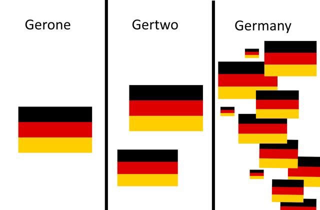
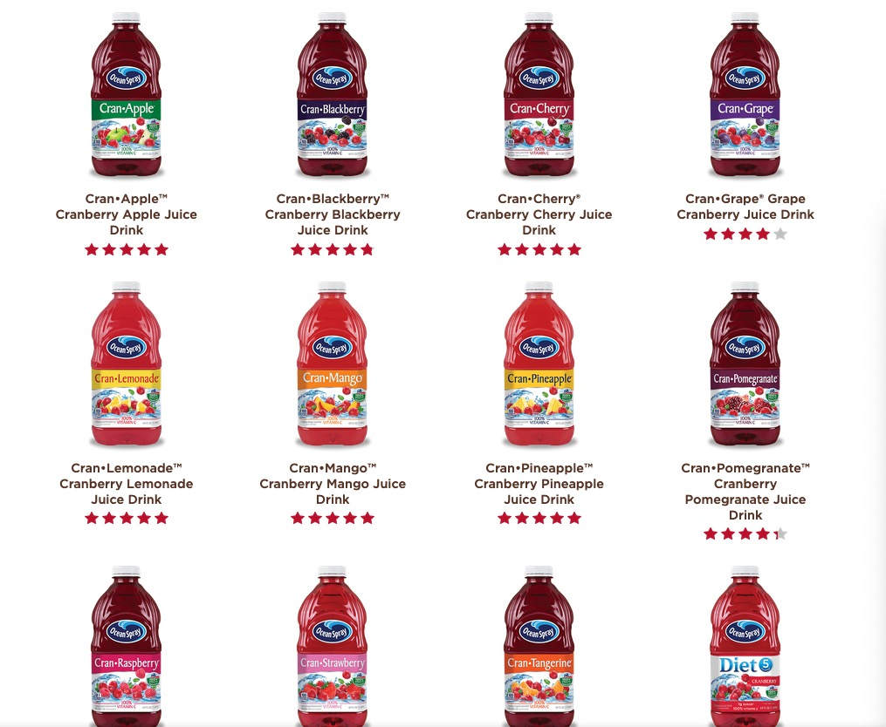

… and some things that should not have been forgotten were lost. History became legend, legend became myth. And for two and a half thousand years, the morpheme passed out of all knowledge.
How are words born?
How are morphemes born?
Do morphemes ever die?
Reanalysis!
Blending: situationship, croots, mansplain
Coining: bling, yeet, doggo, uwu, dongle
Univerbation: cat-and-mouse game, or goodbye
Clipping: pog, rizz
Spelling Changes: thicc
Acronyms and Initialisms: NASA, WAP, thot, UCSD, UCB
Borrowings: pupusa, kawaii!
New meanings: nerf, body count, cap
… and many more
-ation, -ize, -ify from Latin
uber- from German
-ito/-ita from Spanish
Other borrowed morphemes?
‘will’ as future marker from Old English ‘willan’
‘we’ll’ as future marker from ‘we will’
‘imma head out’ from ‘I am going to head out’
‘Let’s eat’ from ‘let us eat’
Compounding takes two existing free words and combines them for a new meaning
Most Compounds have a ‘head’ which controls the part of speech and part of the meaning
Compounding acts like derivation
Salad Dressing, Butt Dial, Booty Call, Big Mac, Blowhard, pushover, Hawkeye
Substitutions feel very creative
It ceases to be ‘segmentable’
-en is no longer a productive plural for English
‘Strong verbs’ (ablaut) is no longer a productive process
It’s not usable morphology, it’s ‘a word being weird’
We view ‘children’ as a quirk of ‘child’
We view ‘brethren’ as a separate word
We consider ‘strong’ (ablauted) verbs to be ‘irregular’
You may find it in old words
Speakers may be vaguely aware of the affix
It’s no longer active
It is lost to the language
… and some things that should not have been forgotten were lost. History became legend, legend became myth. And for two and a half thousand years, the morpheme passed out of all knowledge.

Until, when chance came, it ensnared another bearer.
… and not just in this class!
People try to make sense of their language
Kids try to understand ‘the moving parts’ of what they’re learning
Humans are very good at pattern finding
Whether that was ‘intended’ or not!
“No, older generation, that’s analyzeable!”


Pease -> Peas -> Pea
Statistics -> Statistic
Burglar -> Burgle
Tamales -> Tamale
Euthanasia -> Euthanize
Babysitter -> Babysit
Bookkeeper -> Bookkeep
Dingy -> Dinge
Mentor -> Mentee
Taser -> Tase
Typewriter -> Typewrite
Uncouth -> Couth?
Enthusiasm -> Enthuse?
Disgruntled -> Gruntled?
Disdained -> Dained?
Chocoholic
Workaholic
Enchiladaholic
(Does this mean that Catholics really like cats?)
When does a new meme become a new meme?
How readily can we find the parts of a meme?
How easily can we understand what parts refer to what?
Does that have a role in reanalysis?
Does that reflect on how new memes are born?